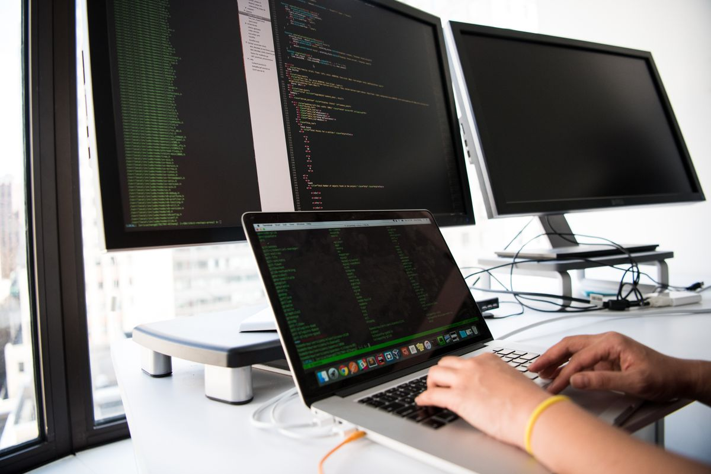
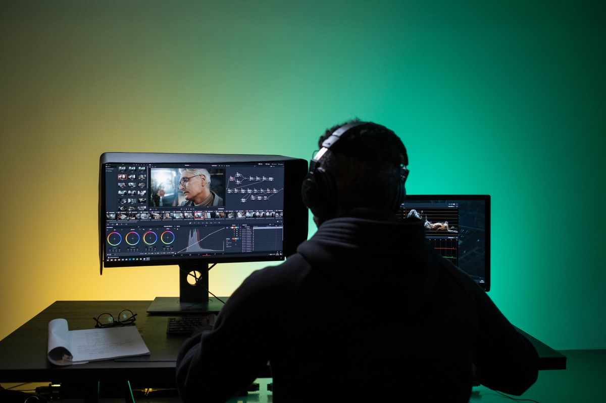

Kamu mau bikin tutorial, merekam jalannya game, atau menunjukkan error di layar ke teman kantor, tapi belum punya aplikasi perekam layar? Kabar baiknya, laptop Windows kamu sebenarnya sudah punya dua perekam bawaan yang gratis: Snipping Tool dan Xbox Game Bar. Tidak perlu memasang aplikasi baru dan tidak perlu berlangganan apa pun.
Artikel ini menunjukkan cara memakai keduanya langkah demi langkah, kapan memilih yang mana, di mana hasil rekamannya tersimpan, dan batas jujur masing masing, berdasarkan panduan resmi Microsoft per Oktober 2026.
Pilih yang mana: Snipping Tool atau Xbox Game Bar
Dua alat ini sama sama bawaan Windows, tapi jagoannya beda. Snipping Tool di Windows 11 cocok untuk merekam satu area layar yang kamu pilih sendiri, misalnya satu jendela aplikasi atau sebagian layar saja. Xbox Game Bar cocok untuk merekam satu aplikasi atau game yang sedang aktif, lengkap dengan suara mikrofon untuk narasi.
Aturan praktisnya begini: mau merekam sambil berpindah pindah aplikasi atau hanya sebagian layar, pakai Snipping Tool. Mau merekam permainan atau satu aplikasi sambil bicara, pakai Xbox Game Bar. Pengguna Windows 10 tidak punya perekaman video di Snipping Tool, jadi pilihan bawaannya adalah Xbox Game Bar.

Cara rekam layar pakai Snipping Tool di Windows 11
Ini cara yang paling gampang untuk kebanyakan kebutuhan, karena kamu bebas memilih area yang direkam:
- Buka Start, ketik Snipping Tool, lalu buka aplikasinya. Kamu juga bisa menekan tombol Windows + Shift + R untuk langsung membuka panel perekaman video.
- Pilih ikon Video, lalu klik New.
- Klik dan seret untuk menggambar kotak di area layar yang mau kamu rekam. Bagian di luar kotak tidak akan ikut terekam, jadi isi sudut layar lain yang sifatnya pribadi tidak masuk rekaman.
- Klik Start, dan perekaman berjalan sesudah hitung mundur singkat.
- Jalankan aktivitas yang mau kamu tunjukkan, lalu klik Stop bila sudah selesai.
- Hasil rekaman muncul di Snipping Tool dan bisa kamu simpan dari sana. Menurut Microsoft, format satu satunya adalah MP4, dan secara bawaan rekaman tersimpan di folder Videos.
Cara rekam layar pakai Xbox Game Bar
Xbox Game Bar awalnya dibuat untuk pemain game, tapi isinya adalah perekam satu aplikasi yang sama bergunanya untuk presentasi dan tutorial. Caranya begini:
- Buka aplikasi atau game yang mau kamu rekam, dan pastikan jendelanya sedang aktif.
- Tekan Windows + G untuk membuka Xbox Game Bar, lalu buka widget Capture dan klik tombol Record. Cara yang lebih cepat: tekan Windows + Alt + R untuk langsung mulai merekam tanpa membuka panel.
- Bila kamu mau menambahkan suaramu sebagai narasi, tekan Windows + Alt + M untuk menyalakan atau mematikan mikrofon selama perekaman.
- Tekan Windows + Alt + R sekali lagi untuk berhenti. Hasil rekaman tersimpan sebagai berkas MP4 di folder Videos, di dalam subfolder Captures, dengan nama berkas berisi nama aplikasi dan waktu perekaman.
Batas jujur yang perlu kamu tahu
Gratis bukan berarti tanpa batas. Pertama, Xbox Game Bar merekam satu aplikasi atau game saja dan tidak merekam desktop maupun File Explorer, jadi untuk berpindah pindah antar aplikasi pakailah Snipping Tool. Kedua, ada aplikasi dan konten yang memang tidak bisa direkam, misalnya video yang dilindungi, dan Microsoft menyarankan mencoba Snipping Tool bila Game Bar menolak merekam. Ketiga, perekaman video di Snipping Tool adalah fitur Windows 11, jadi di Windows 10 andalkan Game Bar.
Keempat, hasil dari kedua alat ini formatnya MP4. Itu format yang gampang dibuka dan dibagikan ke mana mana, tapi artinya tidak ada pilihan format lain dari alat bawaan ini. Bila kebutuhanmu sudah sampai merekam banyak sumber sekaligus, memasang kamera wajah, atau menyiarkan langsung, barulah aplikasi perekam khusus terasa perlu.
Sesudah rekam: cek, potong, bagikan
Sesudah berhenti merekam, putar dulu hasilnya sebentar. Cek apakah suara mikrofonmu terdengar jelas dan apakah ada notifikasi atau data pribadi yang tidak sengaja ikut terekam. Bila awal atau akhir rekaman perlu dipotong, Microsoft mengarahkan pengguna Snipping Tool ke Clipchamp, aplikasi edit video yang juga bawaan Windows, lewat pilihan edit di hasil rekaman.
Dua kebiasaan kecil membuat hasilmu jauh lebih rapi: lakukan tes rekaman pendek sebelum sesi yang penting, dan tutup aplikasi yang tidak perlu supaya notifikasinya tidak muncul di tengah rekaman. Ingat juga dua lokasi simpan yang berbeda ini: Snipping Tool menaruh hasil di folder Videos, sedangkan Game Bar menaruh hasil di Videos lalu Captures, jadi jangan bingung mencarinya.

Intinya
Cara rekam layar laptop Windows itu tidak perlu aplikasi berbayar: Snipping Tool merekam area pilihanmu di Windows 11 lewat Windows + Shift + R, dan Xbox Game Bar merekam satu aplikasi atau game di Windows 10 dan 11 lewat Windows + Alt + R, lengkap dengan mikrofon untuk narasi. Keduanya gratis, resmi bawaan Windows, dan hasilnya MP4 yang tersimpan di folder Videos. Per Oktober 2026, dua alat itu sudah cukup untuk tutorial, presentasi, dan rekaman permainan kasual.
← Kembali ke Other